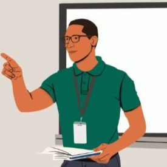
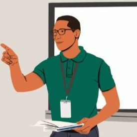

Ideas Esenciales
- Las unidades temáticas se basan en la integración de materias alrededor de un tema central significativo.
- Se conecta el contenido con la vida real y con cuestiones relevantes para los estudiantes.
- Promueven el trabajo colaborativo y el aprendizaje activo entre estudiantes y docentes de distintas disciplinas.
- Favorecen evaluaciones auténticas que tienen aplicación en la vida real dentro del proceso de aprendizaje.

Pasos para diseñar una unidad temática


 

1. Escucha la voz del estudiante
Inicia preguntando a tus estudiantes qué temas les importan. Sus preguntas reales aumentan la motivación. Esto puede incluir problemáticas sociales o científicas que les interesen.
2. Integra intereses y objetivos académicos
Elige temas que conecten el interés personal del alumnado con aprendizajes de múltiples materias. Por ejemplo, estudiar enfermedades puede integrar ciencias, historia, lectura, escritura y más.
3. Ajusta según el contexto
Adapta la duración, complejidad y enfoque del proyecto a la edad, grado y contexto cultural del grupo. Alterna entre metodologías tradicionales y trabajo interdisciplinario intensivo si es necesario.
4. Transforma tu rol como docente
El docente se convierte en facilitador, guía e investigador junto a los estudiantes. Deja de ser un experto en una sola materia para convertirse en un mediador de aprendizaje global.
Ventajas
- Promueve el pensamiento crítico y la conexión entre conocimientos.
- Alta motivación estudiantil al abordar temas reales y significativos.
- Favorece el trabajo colaborativo docente y la planificación interdisciplinaria.
Desafíos
- Requiere mucho tiempo de planificación y coordinación entre docentes.
- No siempre es compatible con currículos rígidos o evaluaciones estandarizadas.
- Demanda flexibilidad de horarios y mayor autonomía del estudiante.

¿Por qué nació esta idea?
Durante los años 90, muchos sistemas educativos comenzaron a dividir el conocimiento en materias separadas: matemáticas, lectura, ciencia... Aunque esa organización ayudó a establecer estándares, también provocó una consecuencia inesperada: una visión fragmentada del aprendizaje.
Pero la vida real no funciona por asignaturas ni por bloques de 40 minutos. Es compleja, conectada, interdisciplinaria. Por eso hoy, docentes reflexivos buscan formas de enseñanza más integradoras. Las unidades temáticas son una respuesta poderosa: rompen las fronteras artificiales del currículo, cruzan disciplinas, y permiten a los estudiantes investigar temas relevantes como en la vida real.
Esta metodología invita a ver el conocimiento como un todo. No solo aprender, sino entender el mundo en profundidad.
Planificación de Ejemplo
 Ver planificación en PDF
Ver planificación en PDF
Referencias
- Área-Moreira, M. (2018). La identidad digital del alumnado en contextos escolares: análisis y propuestas educativas. Revista de Educación a Distancia, 18(56). https://doi.org/10.6018/red/56/10
- Castillo, R. (2020, marzo). Unidades temáticas [Diapositivas de PowerPoint]. Universidad San Francisco de Quito.
- Common Sense Media. (2023). Digital Citizenship Curriculum. https://www.commonsense.org/education/digital-citizenship
- Daniels, H. y Bizar, M. (2005). Teaching the Best Practice Way: Methods that Matter, K-12.
- González, M., & Flores, L. (2014). Unidades temáticas integradoras para el desarrollo de competencias. Editorial Trillas.
- Ministerio de Educación del Ecuador. (2016). Currículo de los niveles de Educación General Obligatoria: Subnivel de Educación General Básica Superior. https://educacion.gob.ec/curriculo-educacion-general-basica/
- Piaget, J. (1972). Psychology and pedagogy. Viking Press.
- Tobón, S. (2013). Formación por competencias: Pensamiento complejo, currículo, didáctica y evaluación. Ecoe Ediciones.
- Tomlinson, C. A. (2017). El aula diversificada: Dar respuesta a las necesidades de todos los estudiantes. Paidós Educación.